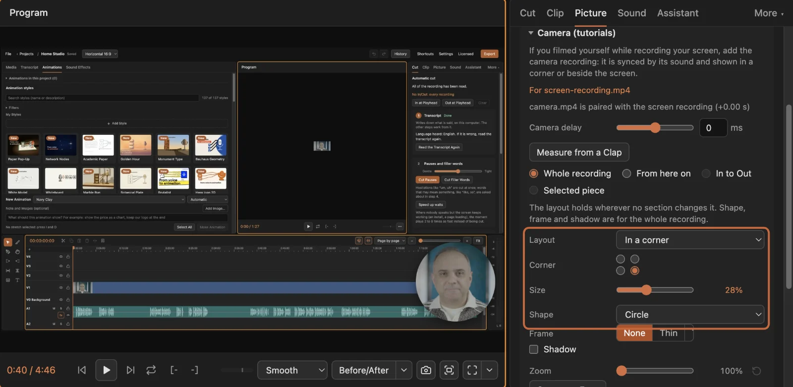
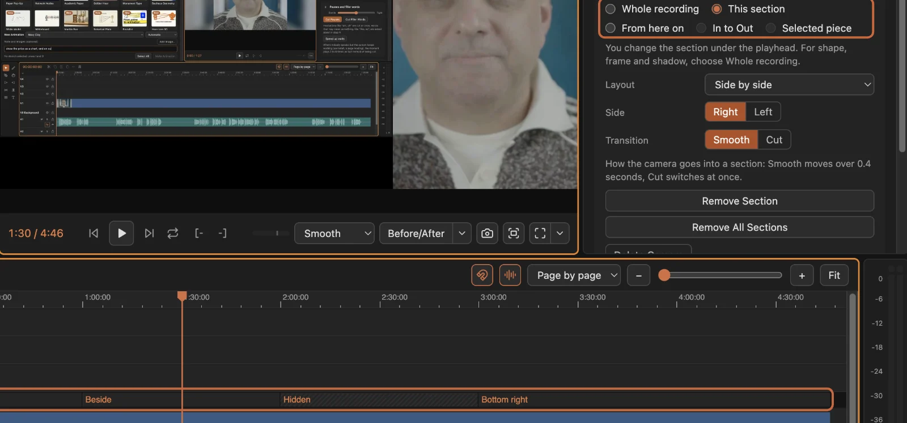
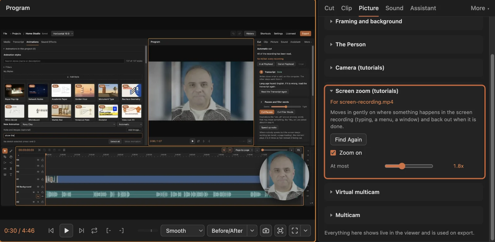

Screen tutorials
For lessons recorded on screen: your camera lines up with the screen recording by its sound, sits where you want it, and the picture zooms in where something happens.

Add your camera
Open the screen recording as the project's recording. In Picture › Camera (tutorials), press Add Camera Recording… It is synced by its sound. If you recorded with Kilnframe's own recorder, the camera comes paired already (Record screen and camera).
When the picture runs behind the sound, set Camera delay in milliseconds, or clap once in view of the camera and press Measure from a Clap.
Where the camera sits
- Layout: In a corner, Side by side, Face full screen or Hidden.
- Corner (top or bottom, left or right), Side, Size, Shape, Frame and Shadow.
- Centre on Face finds your face across the recording and fills the frame with it; Zoom sets it by hand. Hold Alt and drag inside the camera in the viewer to move the picture.
Section by section
Change says where a change holds: Whole recording, This section (once there are sections), From here on, In to Out or Selected piece. So the camera can be in the corner for the intro, hidden during a long demo and side by side at the end. Transition: Smooth moves over 0.4 seconds, Cut switches at once.
From the transcript, right-click a sentence to change the camera there.

Screen zoom
Screen zoom (tutorials) moves in gently where something happens in the screen recording (typing, a menu, a window) and back out when it is done. Press Find Activity and Zoom; At most sets how close it goes.

Speed up waits
In the Cut tab, Speed up waits: where nobody speaks but the screen keeps working (an install, a page loading), the moment plays 2 to 8 times as fast instead of being cut.
Mouse highlight and clicks
For a recording made with Kilnframe's recorder, which keeps where the pointer was:
- Show a circle under the mouse pointer, with its colour, opacity and size.
- Show a ring on each click, if Record clicks too was ticked while recording.
- Add Click Sounds: a short click at each recorded click, on a track of its own.